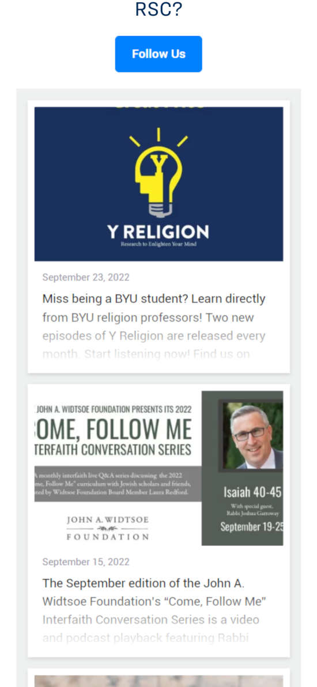

Proximity
Religious Studies Center
https://rsc.byu.edu/ The related content is visually grouped
Contrast
Bankrate
https://www.bankrate.com/Very black and white, not a lot of color. While that may be negative, it does make good contrast. Passed contrast test with WAVE tool.
Alignment
Smithsonian
https://www.si.edu/Pictures and headings are aligned, along with the short descriptions. All are centered